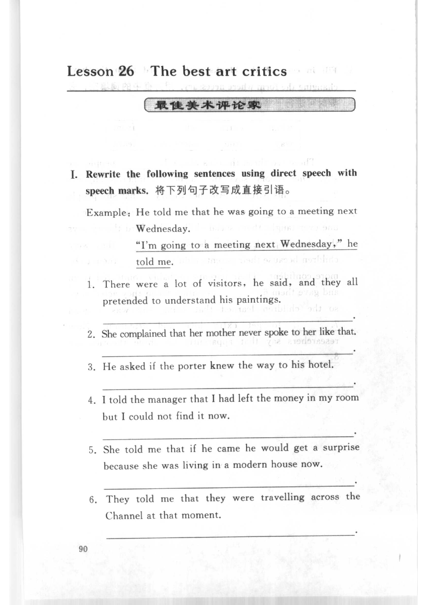
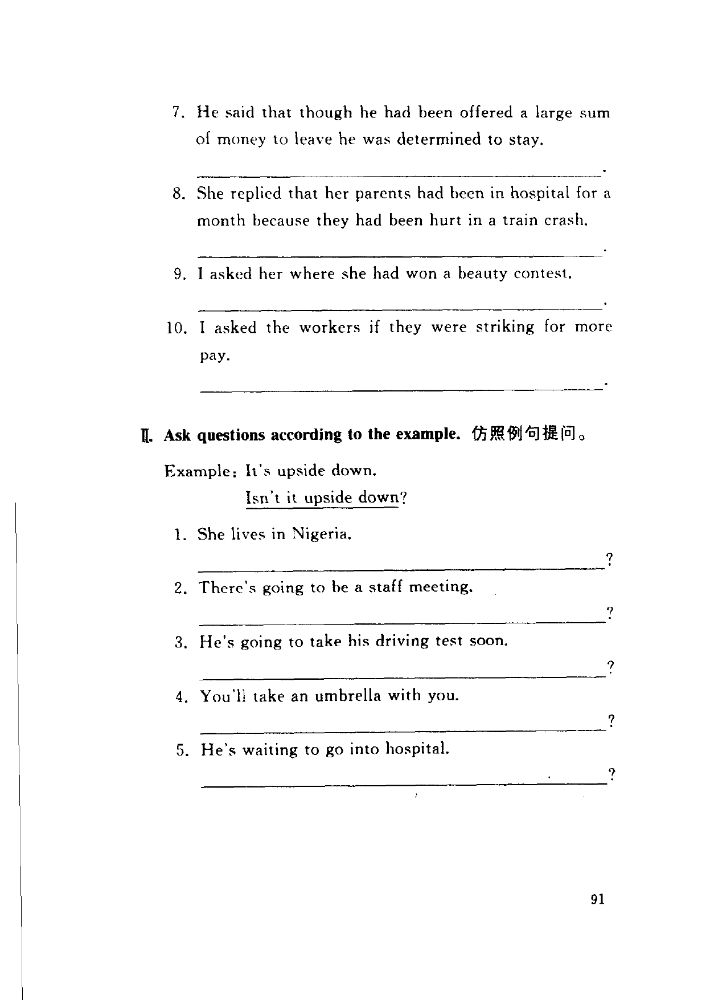
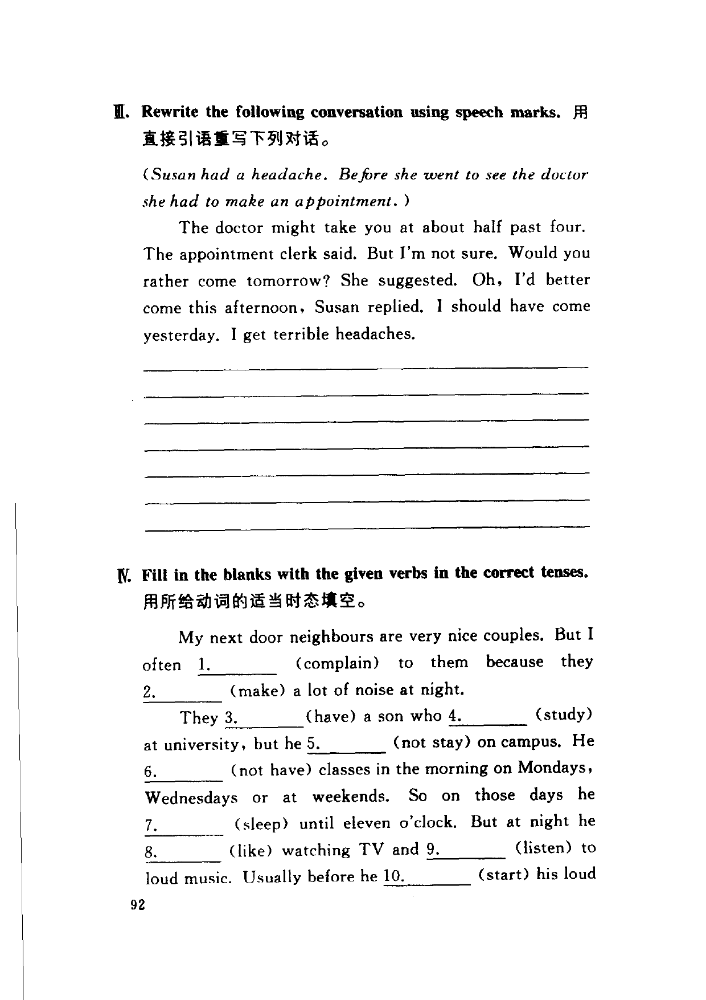
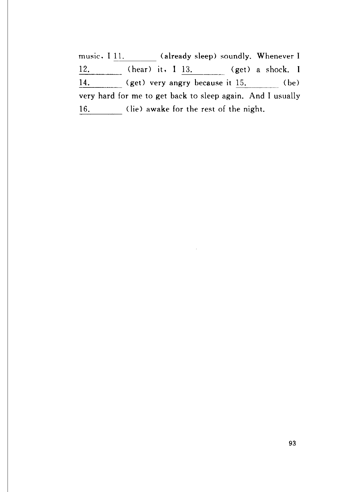

Grammar exercises · 语法练习
I. Rewrite the following sentences using direct speech with speech marks.
将下列句子改写成直接引语。
Example: He told me that he was going to a meeting next Wednesday.
“I'm going to a meeting next Wednesday,” he told me.
-
I. Direct speech — There were a lot of visitors, he said, and they all pretended to understand his paintings.
-
I. Direct speech — She complained that her mother never spoke to her like that.
-
I. Direct speech — He asked if the porter knew the way to his hotel.
-
I. Direct speech — I told the manager that I had left the money in my room but I could not find it now.
-
I. Direct speech — She told me that if he came he would get a surprise because she was living in a modern house now.
-
I. Direct speech — They told me that they were travelling across the Channel at that moment.
-
I. Direct speech — He said that though he had been offered a large sum of money to leave he was determined to stay.
-
I. Direct speech — She replied that her parents had been in hospital for a month because they had been hurt in a train crash.
-
I. Direct speech — I asked her where she had won a beauty contest.
-
I. Direct speech — I asked the workers if they were striking for more pay.
II. Ask questions according to the example.
仿照例句提问。
Example: It's upside down.
Isn't it upside down?
-
II. Questions — She lives in Nigeria.
-
II. Questions — There's going to be a staff meeting.
-
II. Questions — He's going to take his driving test soon.
-
II. Questions — You'll take an umbrella with you.
-
II. Questions — He's waiting to go into hospital.
III. Rewrite the following conversation using speech marks.
用直接引语重写下列对话。
-
III. Conversation — (Susan had a headache. Before she went to see the doctor she had to make an appointment.)
The doctor might take you at about half past four. The appointment clerk said. But I'm not sure. Would you rather come tomorrow? She suggested. Oh, I'd better come this afternoon, Susan replied. I should have come yesterday. I get terrible headaches.
IV. Fill in the blanks with the given verbs in the correct tenses.
用所给动词的适当时态填空。
My next door neighbours are very nice couples. But I often 1. (complain) to them because they 2. (make) a lot of noise at night. They 3. (have) a son who 4. (study) at university, but he 5. (not stay) on campus. He 6. (not have) classes in the morning on Mondays, Wednesdays or at weekends. So on those days he 7. (sleep) until eleven o'clock. But at night he 8. (like) watching TV and 9. (listen) to loud music. Usually before he 10. (start) his loud music, I 11. (already sleep) soundly. Whenever I 12. (hear) it, I 13. (get) a shock. I 14. (get) very angry because it 15. (be) very hard for me to get back to sleep again. And I usually 16. (lie) awake for the rest of the night.
-
IV. Tenses —
1.(complain) -
IV. Tenses —
2.(make) -
IV. Tenses —
3.(have) -
IV. Tenses —
4.(study) -
IV. Tenses —
5.(not stay) -
IV. Tenses —
6.(not have) -
IV. Tenses —
7.(sleep) -
IV. Tenses —
8.(like) -
IV. Tenses —
9.(listen) -
IV. Tenses —
10.(start) -
IV. Tenses —
11.(already sleep) -
IV. Tenses —
12.(hear) -
IV. Tenses —
13.(get) -
IV. Tenses —
14.(get) -
IV. Tenses —
15.(be) -
IV. Tenses —
16.(lie)
Original images · 原图对照
Expand a page to compare it with the transcription. Open the original in a new tab to zoom in.
展开原图核对文字，也可以在新标签页打开原图放大查看。
Book page 90 · Exercise I (direct speech, items 1–6)
Open original · 打开原图 ↗ Download original · 下载原图


Book page 91 · Exercise I (direct speech, items 7–10) and Exercise II (questions, items 1–5)
Open original · 打开原图 ↗ Download original · 下载原图


Book page 92 · Exercise III (conversation rewrite) and Exercise IV (tenses, blanks 1–10)
Open original · 打开原图 ↗ Download original · 下载原图


Book page 93 · Exercise IV (tenses, blanks 11–16)
Open original · 打开原图 ↗ Download original · 下载原图


Your notes and answers
Use this space for longer responses or exercises that do not have an individual answer box.